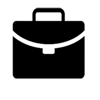
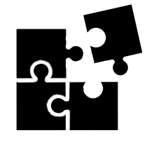

OLIVIER DOAB
Développeur web freelance
FORMATION
Développeur Web
Centre de formation Openclassrooms
Construire un site web fluide s’adaptant à tout type d’écran (web, smartphone et tablette), améliorer le référencement naturel, faire réagir la page web en fonction des actions de l’utilisateur en JavaScript, appliquer les standards du web et les normes en vigueur.
2020 à aujourd'hui
Lille
Formation d'anglais professionnel niveau B1
Organisme de Formation Juliette Dufour
2019
Lille
EXPERIENCE
Cadre Prémédia VDN Presse papier et numérique
Groupe ROSSEL (Radio/Web/Presse écrite/Télévision)
Co-management de 27 opérateurs PAO et graphistes web.
2011 - 2018
Lille
Cadre Photogravure
Quotidien régional La Voix du Nord
Management de 5 opérateurs scanners, 8 opérateurs PAO et 5 conducteurs service des plaques roto
2003 - 2010
Lille
Opérateur PAO et Chromiste multi support
Quotidien régional La Voix du Nord
Traitement, retouche et reproduction de documents polychromes suivant les normes d’impression presse. Mise en page des textes et images, enrichissement typographique, pour le quotidien VDN ainsi que pour les revues labeur (Fémina, TV Mag) et campagnes d'affichage.
1991 - 2002
Lille
Opérateur scanner polychrome et Chromiste Labeur
Agence AGP (Arts Graphisque Photogravure)
Traitement et reproduction de documents polychromes(conversion CMJK de pellicules photos argentiques) suivant les normes d’impression (offset, héliogravure, flexographie). Retouche de chromie et retrait de sous-couleur (UCR/GCR).
1983 - 1990
Lille
Détaché sportif de haut niveau
Centre de commandement de l'armée 43eme RI
Au service militaire, détaché sportif de haut niveau en course à pied sur moyenne et longue distance.
1981 - 1982
Lille
FORMATION
Bac Pro production Graphique
Lycée Baggio
Réalisation de documents que ce soit au niveau de la mise en page des textes que des images pour impression. Contrôler la densitométrie, la colorimétrie, l'esthétisme, la lisibilité, la typographie et la qualité des documents à imprimer. Conducteur sur machines Offsets 4 couleurs.
1979 - 1981
Lille
COMPETENCES
- Management d'équipes
- Jury professionnel aux différents examens Bac+2 en Arts Graphiques
- Cours sur le traitement des images (CMYK, RVB, retrait de sous-couleurs,...)
- Retouche et traitement des images avec Photoshop
- Mise en pages avec Indesign
- Création graphique vectorielle avec Illustrator
- Création de bannière web avec Google Web Designer
- certificat "Formation Python en 2019"